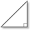

|  | Right Triangle Trig Calculator By Joe Barta - www.pagetutor.com |
Description: A simple (but occasionally very useful) widget that makes right triangle calculations a breeze.
Version: 1.0
Author: Joe Barta - jbarta@apk.net
Web Site: http://www.pagetutor.com/trigcalc/
Usage: Couldn't be simpler... enter two values, press Calculate, and the remaining values are filled in. You can adjust the accuracy of the results.
License: Freeware. Freely distributable.